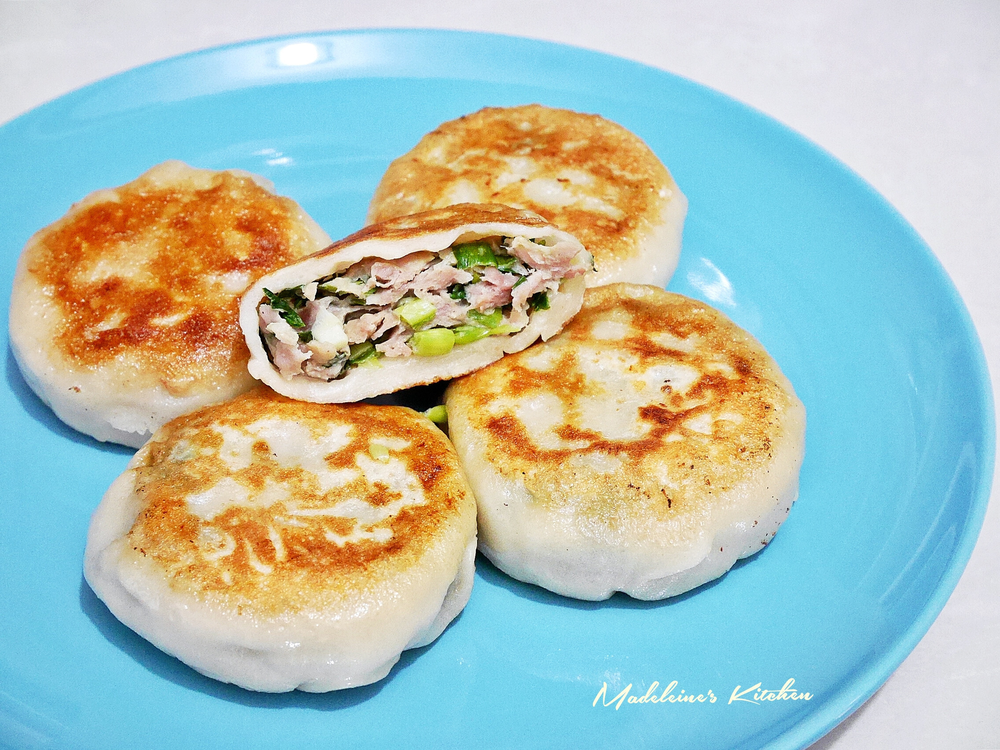
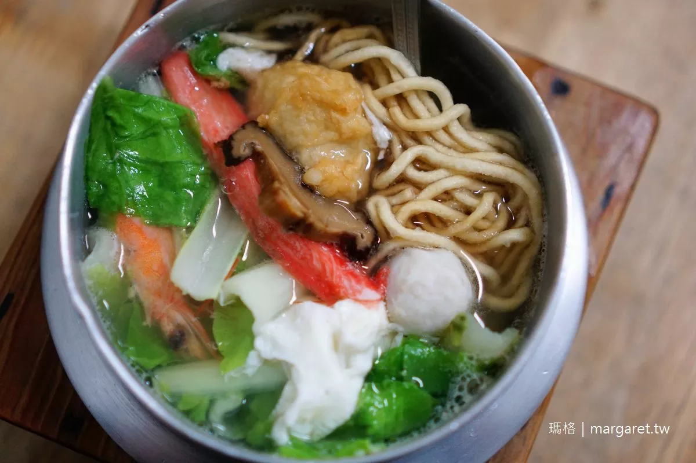

|
|  |  |
| 小籠湯包 | 餡餅 | 鍋燒麵 | 火鍋 |
當我開始這個美食之旅的個人網站時，我從未想像過味蕾可以如此豐富的冒險。這個網站是我的美食日誌，記錄了我在城市中探索各種令人垂涎的美味。這不僅僅是一個味覺的冒險，更是一場對不同文化的探索。
透過我的鏡頭，你將發現各種各樣的料理，每一口都是一趟美食之旅。我詳細描述每道菜的風味和製作過程，讓你在遠方也能感受到美味的滋味。
這個網站不僅僅是關於食物，更是一個社區，與你分享烹飪的樂趣和美好時光。無論你是美食愛好者還是廚藝新手，這裡都有適合你的內容。
加入我，一同品味生活中的美好滋味，發現城市中隱藏的美味寶藏。讓這個美食之旅成為你味蕾的盛宴，一同探索食物背後的故事，因為每一道菜都是一個獨特的故事，等待著被發現。